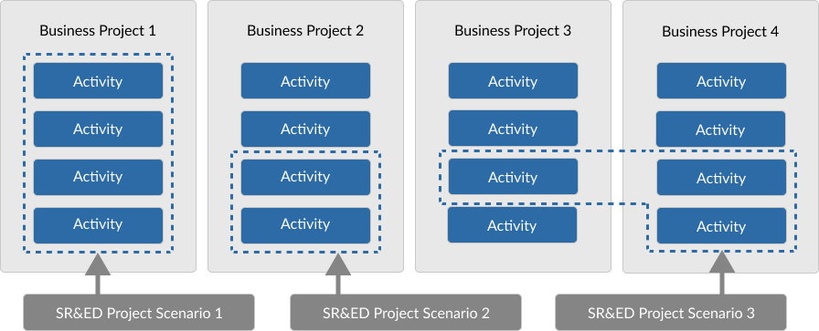

Group work into SR&ED projects
On this page
What is a SR&ED project
Only SR&ED work can be eligible for SR&ED tax incentives, but not all the work your business does will be SR&ED. To claim SR&ED tax incentives, you need to identify your eligible work and then group it into one or more SR&ED projects.
A SR&ED project is a set of connected activities that together achieves the scientific or technological advancement you seek.
Example of a SR&ED project
Let's say your business is developing a vaccine for a new virus. Some parts of that development work are directly related to resolving an uncertainty, such as not knowing how the virus reacts.
But other parts of the work do not directly relate to resolving the uncertainty, such as procuring a culture.
Only the activities directly related to resolving the uncertainty, that is, discovering how the virus reacts, would be considered part of the SR&ED project.
Lifecycle of a SR&ED project
A SRED project starts when you identify the scientific or technological uncertainty. If you find that you have several uncertainties, you may actually have several SR&ED projects.
A SR&ED project ends when new scientific or technological knowledge is gained, whether you were successful in resolving the uncertainty or not. A SR&ED project may still be eligible even if the results you sought were not achieved.
After you have grouped your work into SR&ED projects, you can then determine the related expenditures that you may claim for the year.
While some SR&ED projects can last several years, you may only claim the expenditures incurred during the tax year for which you are claiming.
How to group your work into SR&ED projects
Different ways to group work
The first step in grouping SR&ED work into a SR&ED project is to separate work that is done to achieve the scientific or technological advancement from other work you may have done that is not SR&ED.
Depending on how your business projects are organized, there are different ways you can group your SR&ED work.
What business project means
The purpose of a business project is to achieve commercial success. The lifecycle of a business project may include many activities, often grouped into different projects, phases, and milestones.
The purpose of a SR&ED project is to advance scientific knowledge or to achieve a technological advancement.
SR&ED project scenarios
SR&ED project scenario 1: all activities in your business project are eligible
Your entire business project may working toward achieving an advancement in scientific knowledge or technological uncertainty or for the purpose of achieving technological advancement. This means all the activities taking place would form an SR&ED project.
SR&ED project scenario 2: some of the activities within a business project are eligible
Your business project may have a mix of eligible and ineligible work.
SR&ED project scenario 3: some of the activities over several business projects are eligible
Your business may have several projects where eligible work is happening. You can group these activities across your business projects into SR&ED projects.
Basic steps to grouping you work into a project
-
Identify the activities
Identify all the tasks you carried out that were directly related to overcoming the uncertainty.
It may include the human resources who carried out the activities, the time during the year when the activities took place, and the materials used to conduct the work.
For more information, review: What work is eligible
-
Include SR&ED support work
You may include all support work that corresponds and directly supports your eligible SR&ED work.
Types of support work to include
Eligible support work may include the following activities:
- engineering
- design
- operations research
- mathematical analysis
- computer programming
- data collection
- testing
- psychological research
-
Exclude activities that are not eligible
Exclude any work that is not conducted specifically to overcome the uncertainty.
Types of work that are not eligible
- market research or sales promotion
- quality control or routine testing of materials, devices, products or processes
- research in the social sciences or the humanities
- prospecting, exploring or drilling for, or producing, minerals, petroleum or natural gas
- the commercial production of a new or improved material, device or product or the commercial use of a new or improved process
- style changes
- routine data collection
- acquiring available knowledge or know-how (for example, through training)
- on-the-job learning, hiring expert employees or consultants, or purchasing proprietary knowledge
-
Name the project
Create a name for your project and note down it’s start date and expected completion date. You will need to include this information in your SR&ED expenditures claim.
Get support grouping SR&ED work
Assess the eligibility of your work
Use the Self-assessment and learning tool (SALT) to better understand which parts of your work may qualify as SR&ED work.
SR&ED Self-assessment and learning tool (SALT)
Request a pre-claim consultation (PCC)
Review the guidelines
Guidelines on the eligibility of work for SR&ED tax incentives
Contact us
Contact us if you have any questions about SR&ED.